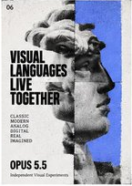
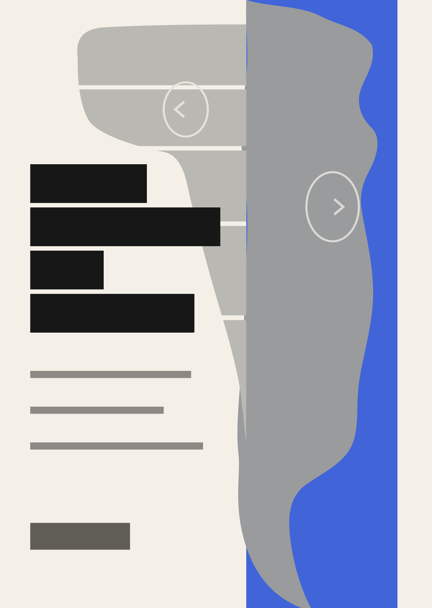
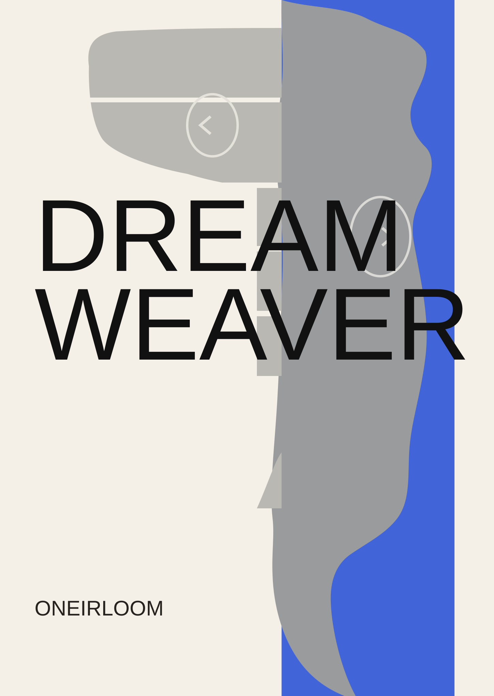

06 · Swiss Sculpture



中栏是按原图位置人工估读的分区示意；灰形是低细节版式占位，不是最终主体素材。右栏是本次排版坐标稿：原图四行标题改为 DREAM / WEAVER 两行，未沿用的小字区域暂留白。原图分区属于目测记录，右栏坐标属于本次设计草案。



中栏是按原图位置人工估读的分区示意；灰形是低细节版式占位，不是最终主体素材。右栏是本次排版坐标稿：原图四行标题改为 DREAM / WEAVER 两行，未沿用的小字区域暂留白。原图分区属于目测记录，右栏坐标属于本次设计草案。